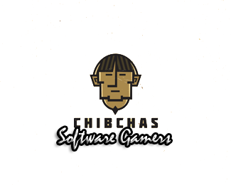

Chibchas
Quien Soy.
 Hola mi nombre es Sebastián, tengo 26 años de edad oriundo de la ciudad de Popayán y estudiante de ingeniería de sistemas en la Universidad del Cauca.Hobbies
- Futbol
- Ajedrez
- Programar
Canales favoritos de youtube
Vídeos favoritos
Una curiosa escena de ninjas, ¡tienes que verlo!.
Escena de la septima temporada de Game of Thrones, Arya Rules..
Libros favoritos

Memorias de mis putas tristes
Un viejo periodista decide festejar sus noventa años a lo grande, dándose un regalo que le hará sentir que todavía está vivo: una jovencita virgen, y con ella «el principio de una nueva vida a una edad en que la mayoría de los mortales están muertos». En el prostíbulo llega el momento en el que ve a la mujer de espaldas, completamente desnuda. Ese acontecimiento cambia su vida radicalmente. Ahora que conoce a esta jovencita se encuentra a punto de morir, pero no por viejo, sino de amor. Así, Memoria de mis putas tristes cuenta la vida de este anciano solitario, un apasionado de la música clásica, nada aficionado a las mascotas y lleno de manías. Por él sabremos cómo en todas sus aventuras sexuales (que no fueron pocas) siempre dio a cambio algo de dinero, pero nunca imaginó que de ese modo encontraría el verdadero amor.
Ver libro
El principe.
El Príncipe, de Nicolás de Maquiavelo (Florencia, 1469-1527) es, sin duda, un clásico en el sentido más literal del término, pero también uno de los libros peor entendidos de la historia de la literatura mundial. Baste pensar en el sentido negativo que en todas las lenguas se da a los términos maquiavelismo y maquiavélico. Con ellos usualmente se designa un uso del poder político carente de prejuicios, en el que el fin justifica cualquier medio. No ha existido hombre poderoso en la tierra, desde Carlos V a Catalina de Médicis, de Luis XIV a Napoleón, hasta los dictadores de la época contemporánea, que no hayan sido acusados de leer secretamente El Príncipe para obtener consejo e inspiración. Sin embargo, puede decirse que Maquiavelo y el método de investigación que desarrolla significan para el origen del pensamiento político moderno lo que Leonardo da Vinci y el suyo significaron, en la misma época, para la ciencia. A partir de un vasto inventario de la historia de las épocas pasadas y de la contemporánea, Maquiavelo se esfuerza por extraer las relaciones, las constantes, aquellas leyes, en definitiva, que permiten los a los Estados, sean Repúblicas o Principados, durar o prosperar. Ofrecemos aquí una edición especialmente cuidada de esta peculiar obra, acompañada de los comentarios de Napoleón Bonaparte y precedida de una introducción del reconocido especialista Giuliano Procacci.
Ver libro